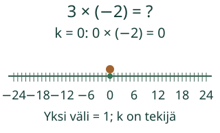
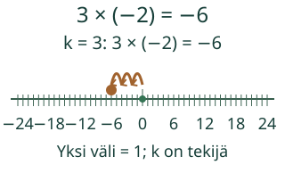
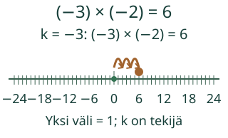
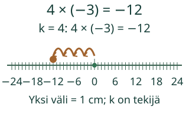

<link rel="stylesheet" href="lesson.css">
<section class="b16" data-b16-mul>

<section data-teaching-step="1" data-lesson-role="teaching-step">
<div class="intro"><p>Loikka tutkii, miksi kolme muutosta −2 vie nollasta kohtaan −6.</p></div><p><strong>Kerron kokonaisluvut ja perustelen merkin.</strong></p>
</section>


<section data-teaching-step="2" data-lesson-role="teaching-step">
<fieldset disabled><legend>Tulo ja tekijän muutos</legend><div data-primary><button type="button" data-action="step">Seuraava askel</button></div><div data-view></div><p data-readout>Tekijä 0, tulo 0. Yksi vaihe lisää tekijää yhdellä ja tuloon luvun −2.</p><div class="controls"><button type="button" data-action="play">Toista</button><button type="button" data-action="stop">Pysäytä</button><button type="button" data-action="model-reset">Mallin alkuun</button><button type="button" data-action="end">Näytä loppu</button></div><p data-running>Toisto pysäytetty.</p><details data-model-details data-lesson-role="teaching-step"><summary>Vaihda mallia / katso arvot</summary><label>Malli<select data-model><option value="groups">Kolme kertaa negatiivinen</option><option value="pattern">Kaava nollan yli</option><option value="different">Negatiivinen kertaa positiivinen</option><option value="positive">Kaksi positiivista tekijää</option><option value="zero">Nolla ensimmäisenä tekijänä</option><option value="zeroSecond">Nolla toisena tekijänä</option><option value="opposite">Kertominen luvulla miinus yksi</option><option value="unit">Kertominen luvulla yksi</option><option value="transfer">Neljä samanlaista korkeuden muutosta</option></select></label><div data-table><table><caption>Tulon kaava: sama toinen tekijä</caption><thead><tr><th>Ensimmäinen tekijä k</th><th>Tulo</th></tr></thead><tbody><tr><td>0</td><td>0 × (−2) = 0</td></tr><tr><td>1</td><td>1 × (−2) = −2</td></tr><tr><td>2</td><td>2 × (−2) = −4</td></tr><tr><td>3</td><td>3 × (−2) = −6</td></tr></tbody></table></div></details></fieldset>
</section>


<section data-teaching-step="3" data-lesson-role="teaching-step">
<p data-lesson-role="question"><strong>Pohdi ensin:</strong> Miksi 3 × (−2) ja (−3) × (−2) päätyvät eri puolille nollaa?</p>
</section>

<section id="examples" data-lesson-role="worked-example"><section data-teaching-step="4-1" data-lesson-role="worked-example"><h2>Esimerkit, perustelut ja uusi tilanne</h2><h3>1. Kolme kertaa negatiivinen</h3><p>3 × (−2) on (−2) + (−2) + (−2) = −6. Ensimmäinen tekijä kertoo tässä kolme samanlaista lisäystä. Luku −2 kertoo muutoksen suunnan; se ei tarkoita negatiivista määrää esineitä.</p><figure data-lesson-role="worked-example"></figure></section>
<section data-teaching-step="4-2-frame1" data-lesson-role="worked-example"><h3>2. Kaava jatkuu nollan yli</h3><p>Pidä toinen tekijä −2 samana. Kun ensimmäinen tekijä pienenee yhdellä, tulo kasvaa kahdella: 2 × (−2) = −4, 1 × (−2) = −2, 0 × (−2) = 0, (−1) × (−2) = 2. Jatkamalla (−3) × (−2) = 6. Näin kertolaskun sama säännöllisyys säilyy nollan molemmin puolin.</p><p>Negatiivinen tekijä ei ole negatiivinen määrä hyppyjä tai esineitä. Se on tämän lukukaavan tekijä. Mallin vaihe muuttaa tekijää yhdellä, ja piste näyttää vastaavan tulon. Luvulla −1 kertominen antaa vastaluvun: (−1) × (−5) = 5.</p><figure data-lesson-role="worked-example"></figure></section>
<section data-teaching-step="4-2-frame2" data-lesson-role="worked-example"><p><strong>Merkkisääntö kahdelle tekijälle:</strong> Jos kumpikaan ei ole nolla, samanmerkkisten tulo on positiivinen ja erimerkkisten negatiivinen. Jos jompikumpi on nolla, tulo on nolla.</p><p><strong>Väärinkäsitys:</strong> Kahden miinusmerkin näkyminen missä tahansa laskussa ei tarkoita positiivista vastausta. Esimerkiksi (−3) + (−2) = −5 on yhteenlasku, mutta (−3) × (−2) = 6 on kertolasku. Selvitä ensin laskutoimitus.</p></section>
<section data-teaching-step="4-3" data-lesson-role="worked-example"><h3>Uusi tilanne: korkeuden muutos</h3><p>Vedenpinta muuttuu −3 cm jokaisessa mittausjaksossa. Neljä jaksoa antaa yhteismuutoksen 4 × (−3) cm = −12 cm. Jaksojen määrä on positiivinen neljä; miinus kuuluu korkeuden muutokseen.</p><figure data-lesson-role="worked-example"></figure></section></section>


<section data-teaching-step="5" data-lesson-role="teaching-step">
<section data-audience-columns><div data-visual-column><h2>Kokeile itse</h2>
<p>Voit vastata suoraan millä tahansa oikealla menetelmällä. Mallin avaaminen, askellus, puhe ja kuuntelu ovat valinnaisia.</p>
<label>Tehtävä<select data-task disabled><option value="groups">Positiivinen kertaa negatiivinen</option><option value="pattern">Kaksi negatiivista tekijää</option><option value="different">Negatiivinen ensimmäinen tekijä</option><option value="positive">Kaksi positiivista tekijää</option><option value="zero">Nolla tekijänä</option><option value="zeroSecond">Nolla toisena tekijänä</option><option value="opposite">Miinus yksi antaa vastaluvun</option><option value="unit">Yksi säilyttää luvun</option><option value="sign">Päättele tulon merkki</option><option value="zeroSign">Nolla on oma tapauksensa</option><option value="transfer">Vedenpinnan korkeuden muutos</option></select></label>
<p data-question>Laske 3 × (−2). Kirjoita tulo.</p></div><div data-response-column><label>Vastaus<input data-answer type="text" inputmode="text" autocomplete="off" maxlength="96" disabled></label>
<button type="button" data-action="check" disabled>Tarkista</button>
<output data-feedback data-result="neutral" aria-live="polite">Tarkista, kun olet valmis.</output>
<details data-help data-lesson-role="hint"><summary>Tarvitsen apua</summary><p>Katso ensin laskutoimitus. Laske tekijöiden itseisarvojen tulo. Päättele merkki erikseen ja tarkista nollatekijä. Negatiivista tekijää voi perustella mallin lukukaavalla.</p><p data-hint>Kolme samanlaista muutosta −2: −2, −4, −6.</p><p>Avun kanssa tehty vastaus on tuettua harjoittelua, ei itsenäisen hallinnan todistus.</p></details></div></section>
</section>


<section data-teaching-step="6" data-lesson-role="teaching-step">
<details data-lesson-role="teaching-step"><summary>Lisää tutkittavaa</summary><p>Laske (−2) × (−3) × (−1) vaiheittain: ensin 6, sitten −6. Pelkkä kahden miinuksen löytäminen ei ratkaise koko tuloa. Mitä tapahtuu, jos mukaan tulee tekijä 0?</p></details>
</section>
<details data-lesson-role="teacher-note"><summary>Opettajalle ja paperille</summary><p>Luokat 7–9. Tavoite: Kokonaislukujen kertolasku ja merkkisääntö. Pakolliset esitiedot ovat M-MUL-01 ja M79-INT-01. Muutoksia ja lukukaavaa selitetään tässä; emme vaadi uutta kokonaislukujen yhteen- tai vähennyslaskun hallintaporttia. Kanoninen rooli on atomic; tehtävä ei kirjoita hallintatiloja.</p><p>Piirrä taulukko, jossa toinen tekijä on −2 ja ensimmäinen kulkee 2, 1, 0, −1, −2, −3. Kirjoita tulot ja merkitse ne samalle lukusuoralle. Vertaile peräkkäisten tulojen muutosta.</p><p>Tulomallien tekijät ovat kokonaislukuja −6…6 ja tulo −24…24. Mittausjaksojen mallissa ensimmäinen tekijä on lisäksi epänegatiivinen. Lukusuoran yksi väli on 1; cm-mallissa 1 cm. Kaksi merkkiä käsitellään kertolaskun tekijöinä, ei negatiivisina esinemäärinä.</p><p>Laskutehtävien vastaus on kokonaisluku. Samanarvoinen tarkka desimaali tai murtoluku käy, esimerkiksi −6,0 tai −12/2. Tämä ei muuta tehtävää murtolukujen laskuoppitunniksi. Merkkitehtävissä kirjoita negatiivinen, positiivinen tai nolla. Syötteen raja on 96 merkkiä, kokonaisosassa ja murtoluvun osissa 18 numeroa, desimaalissa 9 paikkaa. Ei lausekkeita, eksponenttimuotoa tai pyöristystä.</p><p>Vaihetoisto on laskun esitys, ei mittauskello tai aikaraja. Ei negatiivisia fyysisiä esinemääriä. Paikallinen vastaus ei osoita itsenäistä, viivästettyä tai formaalia hallintaa. Ei henkilöhistoriaa, verkkotallennusta tai seurantaa. Ihmis-/oppilas-/vaikuttavuus-/täyden manuaalisen saavutettavuuden/VoiceOverin tai julkaisun hyväksyntää ei ole tehty.</p></details>
<section data-teaching-step="7" data-lesson-role="teaching-step">
<section data-lesson-role="question"><h3>Lopuksi</h3><p>Laske (−4) × (−2). Perustele lukukaavalla ja vertaa summaan (−4) + (−2).</p><details data-lesson-role="answer"><summary>Paljasta vertailu</summary><p>Tulo on 8. Summa on −6. Laskutoimitus vaikuttaa etumerkin päättelyyn.</p></details></section>
</section>
<noscript data-lesson-role="metadata"><p>Alkukuva, arvot ja ratkaistut esimerkit toimivat ilman JavaScriptiä. Toisto ja paikallinen tarkistus tarvitsevat JavaScriptin. Voit vastata samoihin tehtäviin paperille.</p></noscript></section>
